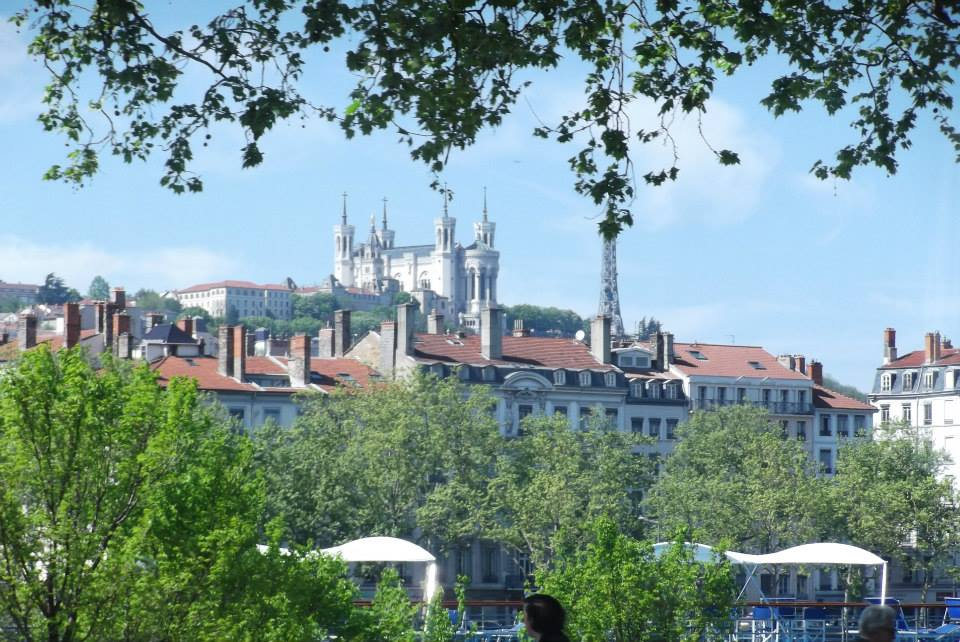
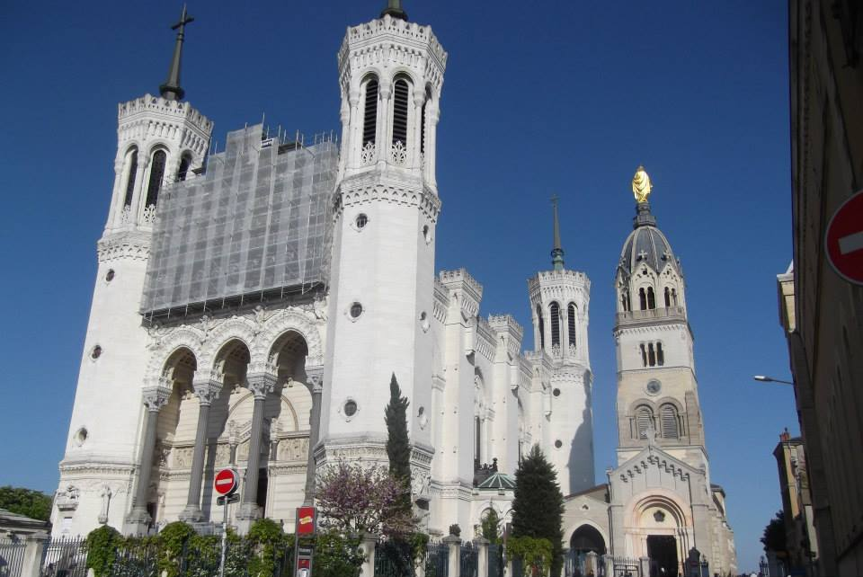
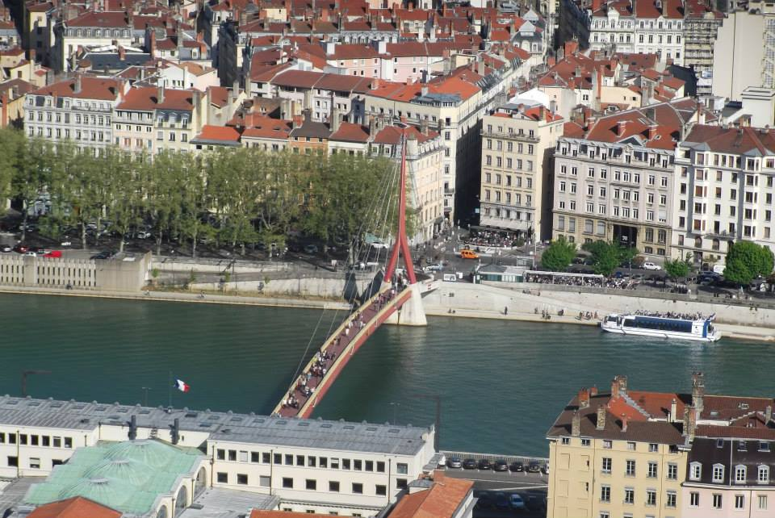
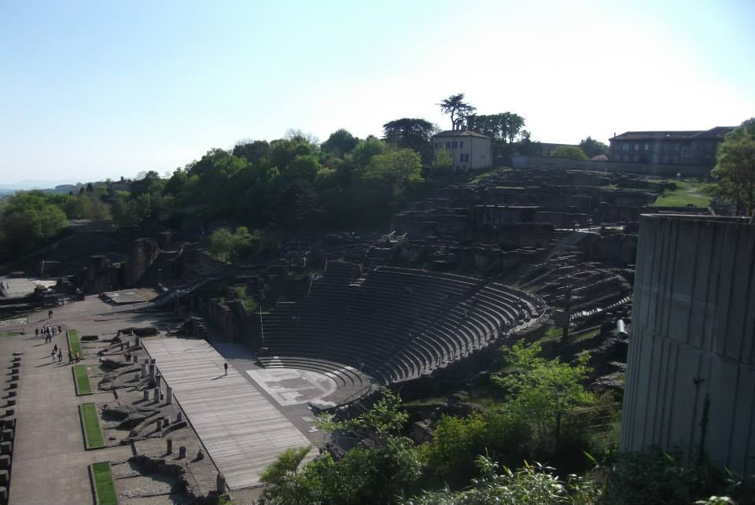

Vieux Lyon
The Renaissance traboules are the classic starting point, hidden among the streets and courtyards between Saint-Georges and Saint-Paul.
Lyon gives our France collection another completely different personality: Renaissance streets, secret traboules, hilltop views, Roman history and serious food credentials. Built around the Rhône and Saône and shaped over more than 2,000 years, this is a city where entire layers of history sit within walking distance of each other.
Vieux Lyon sits between Fourvière hill and the Saône and preserves one of Europe's major Renaissance urban ensembles. The old quarter covers around 24 hectares, with narrow streets, courtyards, staircase towers and Italian-style galleries.
But the bit that makes Lyon particularly fun to explore is that some of its most interesting spaces aren't immediately visible from the street. Behind doors and through courtyards are the city's famous traboules — passageways that cut through buildings to connect one street with another.
Vieux Lyon rewards curiosity. The street itself may look lovely, but courtyards, galleries and passageways reveal another layer of the old city.
The Gothic Cathédrale Saint-Jean anchors the old quarter and sits close to the archaeological remains at the foot of Fourvière.
A traboule is essentially a shortcut passing through one or more buildings between streets. Lyon's tourism office counts roughly 500 traboules across Vieux Lyon, the slopes of Croix-Rousse and the Presqu'île, although only some are accessible to visitors.
They're also real residential spaces, not a theme-park attraction. If a passage is open, the sensible rule is simple: explore quietly and respectfully.
The Renaissance traboules are the classic starting point, hidden among the streets and courtyards between Saint-Georges and Saint-Paul.
Its later traboules are strongly associated with the hill's silk-working history and create another reason to explore beyond the old town.
Keep voices down, respect closed doors and don't assume every passage shown in an old guide remains publicly accessible.
Fourvière hill is one of the places where Lyon's history becomes easiest to understand. Roman Lugdunum developed here, and today the hill combines ancient remains with the unmistakable Basilica of Notre-Dame de Fourvière overlooking the modern city.
From this side of Lyon you can appreciate how the city grew from the Saône across the Presqu'île and eventually beyond the Rhône — a pattern that forms part of the historic urban landscape recognised by UNESCO.
Notre-Dame de Fourvière dominates the skyline and is one of the city's most recognisable landmarks.
Ancient theatres and archaeological remains on Fourvière recall the city's origins as Roman Lugdunum.
Fourvière gives you the geography of Lyon in one sweep: old city, rivers, Presqu'île and the modern city stretching eastwards.
Lyon's historic site was inscribed on the UNESCO World Heritage List in 1998. The protected urban landscape includes Vieux Lyon, Fourvière, the slopes of Croix-Rousse and much of the Presqu'île.
What makes the city unusual isn't one single monument but the visible continuity of its development — from Roman remains to medieval and Renaissance streets, classical districts and later expansion.
The Saône and Rhône are fundamental to Lyon's geography. The Presqu'île sits between them and forms a major part of the central city.
Croix-Rousse adds another historic layer through Lyon's silk-working heritage and the neighbourhood associated with the canuts, or silk workers.
Lyon's culinary reputation is one of the city's defining characteristics. Traditional bouchons lyonnais serve the kind of hearty local cooking associated with the city, while Lyon's broader food culture stretches from markets and bakeries to celebrated restaurants.
If food is part of why you're travelling, this is one of those cities where we'd deliberately leave room in the itinerary for it rather than treating meals as something squeezed between attractions.
Gluten-free travellers: don't assume a traditional bouchon menu will automatically suit you. Check directly with the restaurant about ingredients and cross-contamination before booking.
Lyon is one of the French destinations available through Drive From Home, so you can explore the city virtually before travelling or revisit it afterwards.
Some of our own photos from Lyon — panoramic city views, Fourvière, the rivers and the Roman remains that reveal just how many layers of history the city has.




Use the widget below to browse current Lyon walking tours, food experiences and sightseeing options. These are planning ideas and don't imply that we personally took the exact activities displayed.
Disclosure: Some links on this page are affiliate links. If you book through them, we may earn a small commission at no extra cost to you.
Common questions
From Alsace's wine villages to Lyon's Renaissance streets, our France collection keeps changing character.